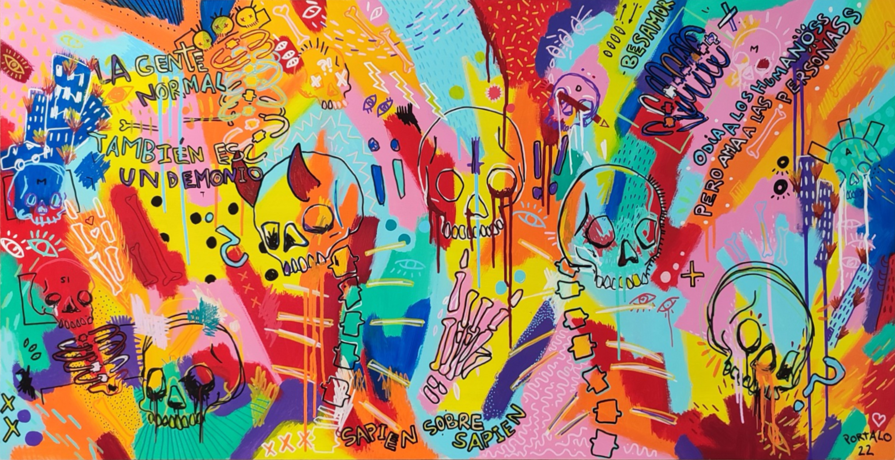

Mololo nace con la pérdida de un buen amigo. En 2022, Andrés Cuesta, fundador y bajista de Papawanda. En este momento, comienzo a pintar obras grandes, 120x60cm en acrílico llenos de colores y motivos y símbolos relacionados con la muerte. Me di cuenta que esta era mi forma de vivir la pérdida de Andrés, enfrentarme al duelo y no olvidar su recuerdo.
Los cuadros están llenos de color porque para mí la muerte no es oscura, sino intensa, y no hay nada más intenso que todos los colores explotando en diferentes direcciones, el horror vacui, la incomprensión. Así, también, a medida que iba pintando, iban apareciendo nuevas frases vinculadas al duelo, como por ejemplo "Hipervivencia", o "Flores vivas para honrar a los muertos".
El proyecto continuó con los años hasta llegar a Berlín, en Kreuzberg, y viví la estética underground, los graffitis, los colores, los stickers. Me enamoré de lo efímero del arte, un barrio que se llena de pinturas que desaparecen con los años, y de la vinculación con la vida y la muerte, el ciclo que nunca para y no espera a nada ni nadie.
Comencé a expresarme con mis propios stickers, entré en el juego, y nació mololo, pero esta vez más amable, calaveras más redondas, más suaves, menos enfadadas con la pérdida, con el duelo. Dando pie a una nueva fase del proyecto, tratando de contar nuevas historias.
Sapien sobre sapien
acrílico sobre DM. 120 x 60cm
